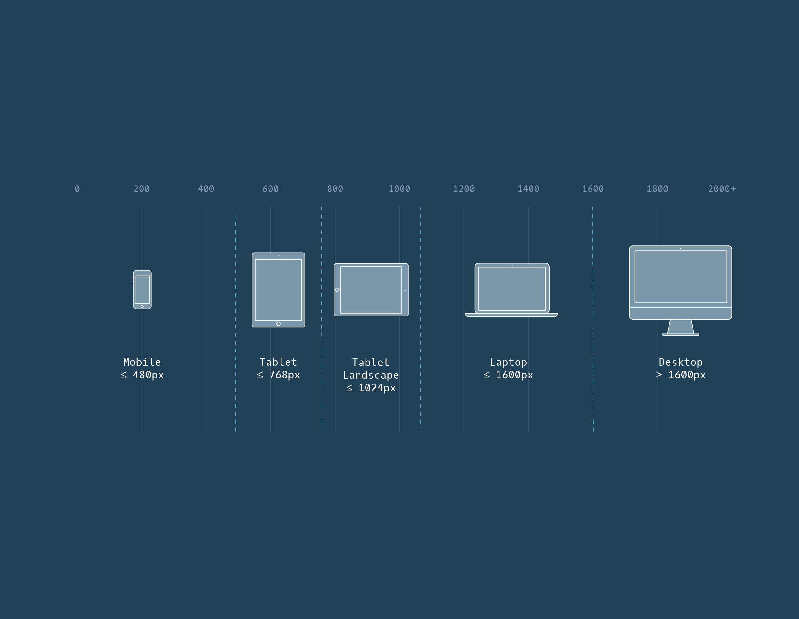

| Description | Code | |
|---|---|---|
CSS @font-face ruleThe CSS @font-face rule allows external fonts or font files to be imported directly into stylesheets.The location of the font file must be specified in the CSS rule so that the files can be loaded from that location. This rule also allows locally hosted fonts to be added using a relative file path instead of a web URL. To add multiple fonts use @font-face block for each font face To Top |
@font-face { @font-face {
|
|
CSS Linking fontsLinking fonts allow user to use web fonts in the document.They can be imported in an HTML document by using the
tag.Once the web font URL is placed within the href attribute, the imported font can then be used in CSS declaration. To Top |
head
|
|
Position: RelativeThis value allows you to position an element relative to its default position on the web page. Relative offset needs to be specified by accompanying the position declaration with one or more of the following offset properties that will move the element away from its default static position:
To Top |
.green-box {
|
|
Position: AbsoluteAnother way of modifying the position of an element is by setting its position to absolute. When an element's position is set to absolute, all other elements on the page will ignore the element and act like it is not present on the page. The element will be positioned relative to its closest positioned parent element, while offset properties can be used to determine the final position from there.To Top |
.green-box {
|
|
Position: FixedWhen an element's position is set to absolute, the element will scroll with the rest of the document when a user scrolls. We can fix an element to a specific position on the page (regardless of user scrolling) by setting its position to fixed, and accompanying it with the offset properties top, bottom, left, and right.To Top |
.title {
|
|
Position: StickyThe sticky value is another position value that keeps an element in the document flow as the user scrolls, but sticks to a specified position as the page is scrolled further. This is done by using the sticky value along with the offset properties. In the example on the left, the .box-bottom div will remain in its relative position, and scroll as usual. When it reaches 240 pixels from the top, it will stick to that position until it reaches the bottom of its parent container where it will “unstick” and rejoin the flow of the document.To Top |
.box-bottom {
|
|
Display: inlineThe default display for some elements, such as em/strong and a, is called inline. Inline elements have a box that wraps tightly around their content, only taking up the amount of space necessary to display their content and not requiring a new line after each element. The height and width of these elements cannot be specified in the CSS document. The CSS display property provides the ability to make any element an inline element. This includes elements that are not inline by default such as paragraphs, divs, and headings. Display: BlockSome elements are not displayed in the same line as the content around them. These are called block-level elements. These elements fill the entire width of the page by default, but their width property can also be set. Unless otherwise specified, they are the height necessary to accommodate their content. Display: Inline-BlockThe third value for the display property is inline-block. Inline-block display combines features of both inline and block elements. Inline-block elements can appear next to each other and we can specify their dimensions using the width and height properties. Images are the best example of default inline-block elements. To Top |
||
Media QueriesCSS uses media queries to adapt a website’s content to different screen sizes. With media queries, CSS can detect the size of the current screen and apply different CSS styles depending on the width of the screen.
To Top |
@media only screen and (max-width: 480px) {
A rule for a range of screen sizes
@media only screen and (min-width: 320px) and (max-width: 480px) {
Same can be written as two separate rules
@media only screen and (min-width: 320px) {
@media only screen and (max-width: 480px) and
@media only screen and (min-width: 480px), (orientation:
|
|
BreakpointsThe points at which media queries are set are called breakpoints. Breakpoints are the screen sizes at which your web page does not appear properly. Rather than set breakpoints based on specific devices, the best practice is to resize your browser to view where the website naturally breaks based on its content. The dimensions at which the layout breaks or looks odd become your media query breakpoints. Within those breakpoints, we can adjust the CSS to make the page resize and reorganize. Possible breakpoints:  To Top |
||
FlexboxThere are two important components to a flexbox layout:
The distinction between flex container and flex item is important because some of the properties apply to flex containers while others apply to flex items. To Top |
||
display: flexAny element can be a flex container. Child elements of flex containers. For an element to become a flex container, its To Top |
div.container {
|
|
inline-flexIf we didn’t want div elements to be block-level elements, we would use To Top |
.container {
|
|
justify-contentWe can specify how flex items spread out from left to right, along the main axis. We will learn more about axes in a later exercise.
To position the items from left to right, we use a property called
To Top |
.container {
|
|